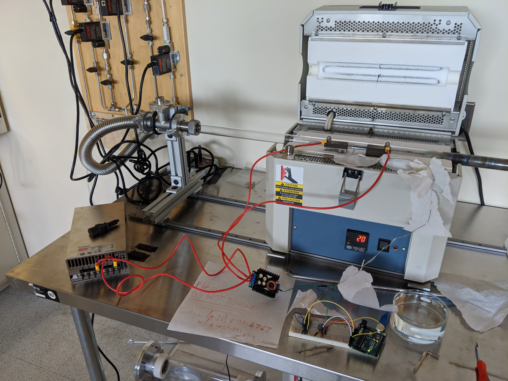
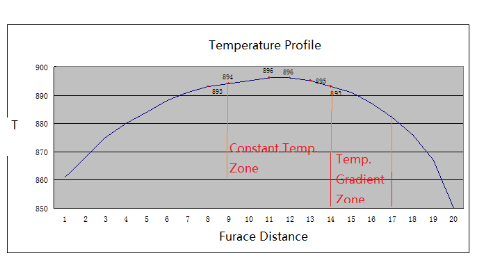
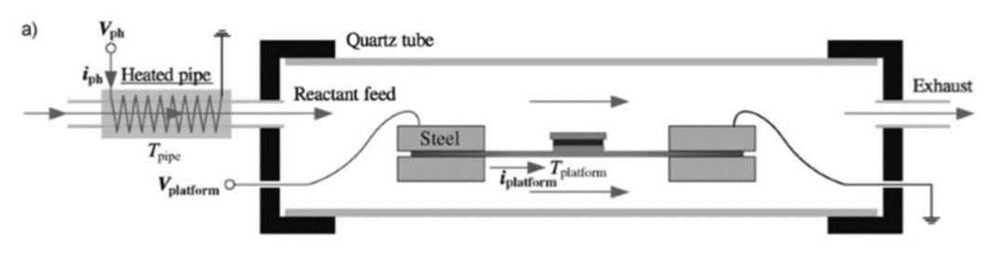
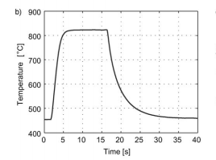

Generic Page
Note: The project described here is a subsystem to the depositor research
Motivation
The design of the platform mimics the designs discussed in the referenced literature and was modeled in Autodesk Inventor. A thermal model was also developed using matlab and roughly predicted the performance of the heated platform.
In CVD, some precursor gas is passed into a heated reaction chamber where the gas breaks apart and deposits onto a substrate to form the material of interest. Depending on what material is being deposited, a catalyst of some form (nanoparticles or a catalytic substrate) is sometimes used to assist the deposition process.
CVD presents some issues in getting consistently reliable, high-quality nanomaterials. Research grade CVD furnaces have a large heating zone and thermal mass to control. As a result, variability exists over the length of the furnace from the measured value of the thermocouple. Additionally, since there’s a large thermal mass to heat, the furnace and substrate take time to reach the desired temperature or cool off after the process is complete. These “ramp up” and “ramp down” times impact the process in ways that are difficult to characterize. Finally, these furnaces are also known as hot walled reactors and have the process of cracking of the precursor and deposition of the material occur in the same step in the same thermal zone, further introducing variability into the process.
One method to address these challenges is to use a resistively heated silicon platform. Such a setup decouples the decomposition of the precursor and the deposition of the nanomaterial. This also makes the temperature experienced by the substrate much more uniform while reducing the time the heated zone takes to achieve a target temperature because the thermal mass of the heated system is smaller.
 Thermal Model
Core Assumptions
To model the heat transfer to and from the silicon wafer, the system was modelled as a one-dimensional system of partial differential equations based on the transient heat equation into and out of half of the system. Figure 3 depicts the simplified system in a block diagram, noting what types of heat transfer exist in the system. The following are also the core assumptions behind the model drawn from the supporting literature.
- The platform temperature is constant across its cross sectional area
- The system mimics an energy generating insulated tip fin and is symmetrical about the center
- The steel electrodes have zero electrical resistivity.
- There is constant thermal resistance between the steel electrodes and the silicon platform.
- Convection maintains a constant ambient temperature
- The electrical resistivity of silicon is approximated by the bulk value for thermal equilibrium, meaning that thermoelectric effects like the Thomson effect are neglected, and the electric field does not create excess carriers.
- Appropriate temperature-dependent physical properties for silicon and steel are as supplied by the literature.
Governing Equation Terms
- Heat capacity: the change in temperature
- Diffusion (conduction term)
- Heat dissipation due to resistive heating source (energy generation)
- Heat loss to surroundings (convection and radiation)
Boundary Conditions
- Heat transfer flowing out of steel block through contact between steel block and silicon wafer, modeled as a heat resistor, equals heat flowing into wafer
- Heat generation in silicon wafer is given by equation 3
- At x = 0, the heat transfer out of the steel block is modelled by convection and radiation
- Heat transfer through the middle of the silicon wafer is zero due to symmetry
 Salar de Uyuni, Bolivia
Salar de Uyuni, Bolivia Salar de Uyuni, Bolivia
Salar de Uyuni, Bolivia Salar de Uyuni, Bolivia
Salar de Uyuni, Bolivia Salar de Uyuni, Bolivia
Salar de Uyuni, Bolivia Salar de Uyuni, Bolivia
Salar de Uyuni, Bolivia Salar de Uyuni, Bolivia
Salar de Uyuni, Bolivia Salar de Uyuni, Bolivia
Salar de Uyuni, Bolivia Salar de Uyuni, Bolivia
Salar de Uyuni, Bolivia 1
1 2
2 3
3 4
4 5
5 6
6 7
7 8
8